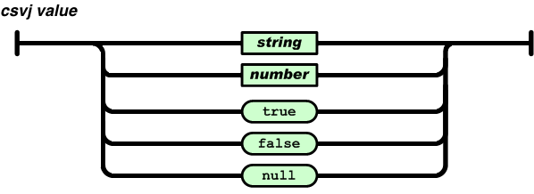

CSVJ is a csv-like format for storing tables that follows certain JSON encoding rules.
Unlike plain csv, CSVJ has a strict definition for separators, quoting, encoding. It supposed to be imported and exported without configuration and it does not have dialects.
There are many problems with CSV format, mainly text-encoding, separators and delimiters.
You can't be sure that CSV generated in one application could be imported to another without tweaking export or parsing parameters. CSVJ solves this.
CSVJ file consists of number of lines separated by newlines (Windows or Linux style).
newline is \r or \r\n
Each CSVJ line is like a JSON array, except:
CSVJ values (array elements) otherwise are identical to JSON.

String and number formats are the same as JSON.
That's all.
| Year | Make | Model | Description | Price |
|---|---|---|---|---|
| 1996 | Ford | Ka | abs, ac | 3000 |
| 1998 | Chevy | Venture "Extended Edition" | 3999 | |
| 1998 | Chevy | Venture "Executive Edition, Large" | 4999 | |
| 1995 | Jeep | Grand Cherokee | SELL NOW! air, moon roof, loaded |
$3599 |
The table above represented in CSVJ will look the following way:
1996,"Ford","Ka","abs,ac",2999.99 1998,"Chevy","Venture \"Extended Edition\"","",3999 1998,"Chevy","Venture \"Executive Edition, Large\"","",4999 1995,"Jeep","Grand Cherokee","SELL NOW!\nair, moon roof, loaded","$3599"
The representation does not change, regardless preferred decimal or value separators of the country the code is running in.
JSON text exchanged between systems that are not part of a closed ecosystem MUST be encoded using UTF-8 [RFC3629].Obviously you can use any encoding inside a closed ecosystem.
To be listed in this section. See github.com/csvj-org for code by csvj-org.
Recommended file extension: csvj
Currently there is no registered MIME extension, however we plan to apply for text/csvj at some point.
All original content at csvj.org is distributed under MIT license:
Copyright (c) 2018 CSVJ.org
Permission is hereby granted, free of charge, to any person obtaining a copy
of this software and associated documentation files (the "Software"), to deal
in the Software without restriction, including without limitation the rights
to use, copy, modify, merge, publish, distribute, sublicense, and/or sell
copies of the Software, and to permit persons to whom the Software is
furnished to do so, subject to the following conditions:
The above copyright notice and this permission notice shall be included in all
copies or substantial portions of the Software.
THE SOFTWARE IS PROVIDED "AS IS", WITHOUT WARRANTY OF ANY KIND, EXPRESS OR
IMPLIED, INCLUDING BUT NOT LIMITED TO THE WARRANTIES OF MERCHANTABILITY,
FITNESS FOR A PARTICULAR PURPOSE AND NONINFRINGEMENT. IN NO EVENT SHALL THE
AUTHORS OR COPYRIGHT HOLDERS BE LIABLE FOR ANY CLAIM, DAMAGES OR OTHER
LIABILITY, WHETHER IN AN ACTION OF CONTRACT, TORT OR OTHERWISE, ARISING FROM,
OUT OF OR IN CONNECTION WITH THE SOFTWARE OR THE USE OR OTHER DEALINGS IN THE
SOFTWARE.
Some images from json.org are used according to JSON license:
Copyright (c) 2002 JSON.org
Permission is hereby granted, free of charge, to any person obtaining a copy of this software and associated documentation files (the "Software"), to deal in the Software without restriction, including without limitation the rights to use, copy, modify, merge, publish, distribute, sublicense, and/or sell copies of the Software, and to permit persons to whom the Software is furnished to do so, subject to the following conditions:
The above copyright notice and this permission notice shall be included in all copies or substantial portions of the Software.
The Software shall be used for Good, not Evil.
THE SOFTWARE IS PROVIDED "AS IS", WITHOUT WARRANTY OF ANY KIND, EXPRESS OR IMPLIED, INCLUDING BUT NOT LIMITED TO THE WARRANTIES OF MERCHANTABILITY, FITNESS FOR A PARTICULAR PURPOSE AND NONINFRINGEMENT. IN NO EVENT SHALL THE AUTHORS OR COPYRIGHT HOLDERS BE LIABLE FOR ANY CLAIM, DAMAGES OR OTHER LIABILITY, WHETHER IN AN ACTION OF CONTRACT, TORT OR OTHERWISE, ARISING FROM, OUT OF OR IN CONNECTION WITH THE SOFTWARE OR THE USE OR OTHER DEALINGS IN THE SOFTWARE.